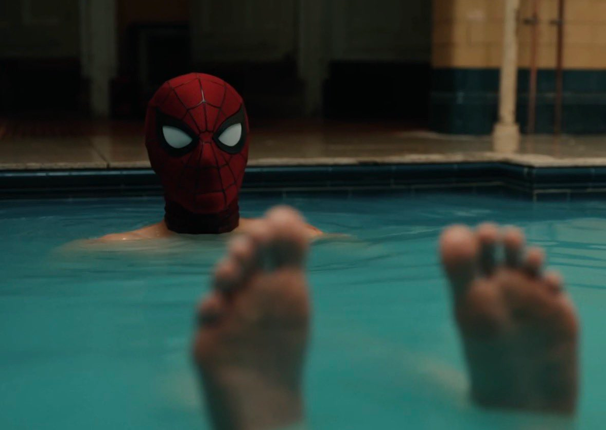

← Previous post: Spider-Man: Brand New Day

Saw
Brand New Day
for the
second time
last night. I haven't felt like I have much to say, but
said I'd write about my thoughts, and I think it would be weird to have my pre-watch thoughts but not my actual
thoughts on the movie. Sometimes, though, I don't really have anything to say about good movies. Like. It was a
good movie. I've had two opportunities now to write a proper, in-depth Letterboxd review, but both of mine are
concise. I always have SO much to say about the MCU, but the MCU Spider-Man movies are usually not too connected
to the rest of the MCU because Marvel knows 98% of the people going to see Spider-Man haven't seen a Marvel
movie since the LAST Spider-Man. Still, this probably has the most connections to other MCU projects in a while
(Thunderbolts* had a lot, but before that it's all pretty sparse). SPOILERS AHEAD!!!
Well, between writing my pre-watch thoughts and me watching the movie, I got spoiled. I got spoiled
that Sadie Sink was playing Jean Grey. I had already been soft spoiled, like where you see something on social media
in the corner of your eye and immediately scroll past, but nope I had to get full spoiled too. It was so stupid of me too,
it was a short from the Escape Pod guys, my go-to CBM chuds (CBM = comic book movie, for the uninitiated). They
literally said "SPIDER-MAN SPOILERS" at the beginning and gave me so much time to bail, but I guess I was doomscrolling
so absentmindedly I didn't process it. Oh well, not that bad of a spoiler I guess. Everyone kinda assumed it, but it
would've been really cool.